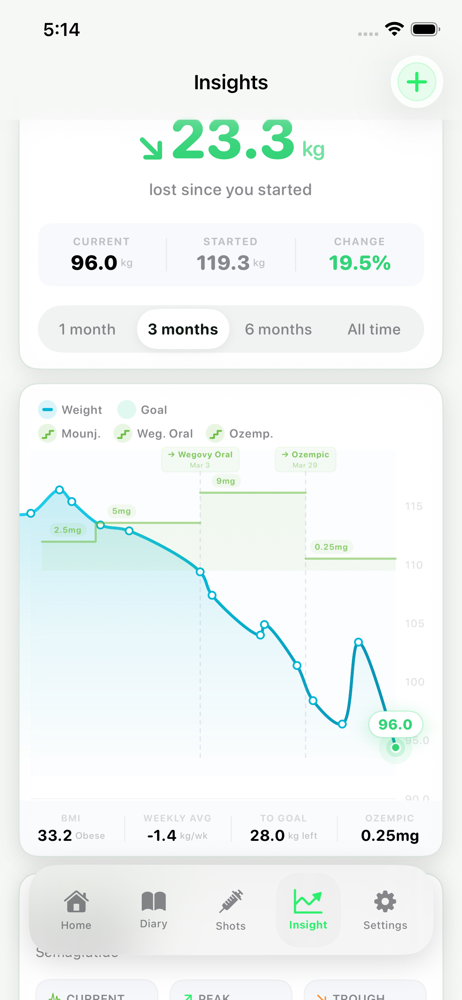
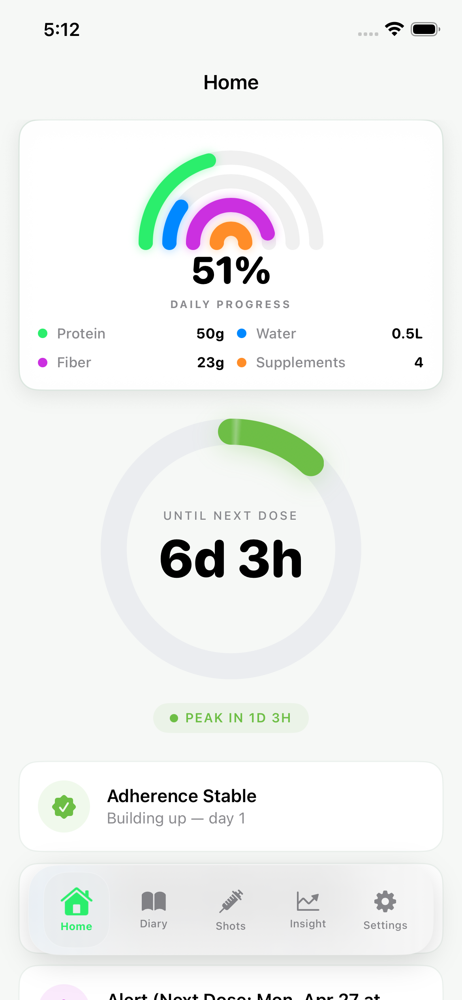
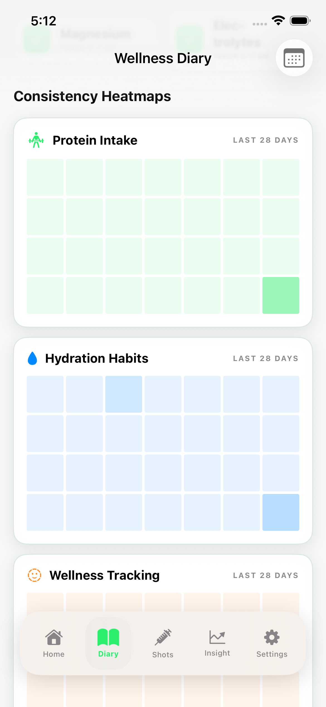
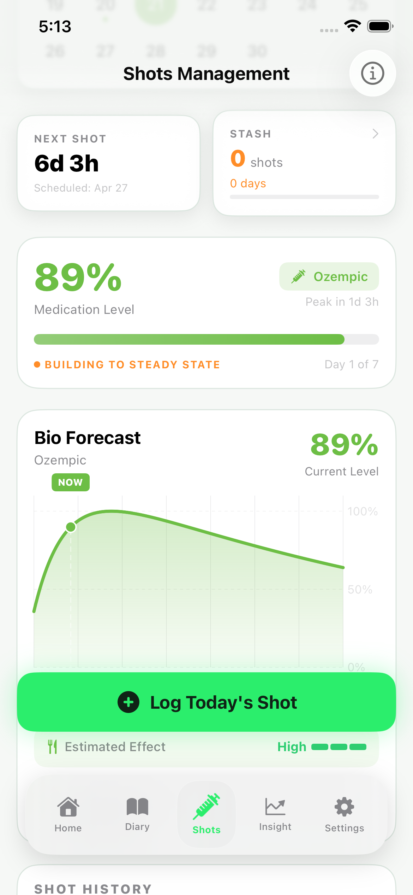
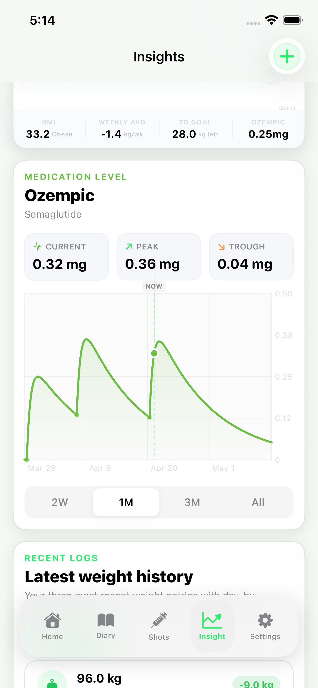
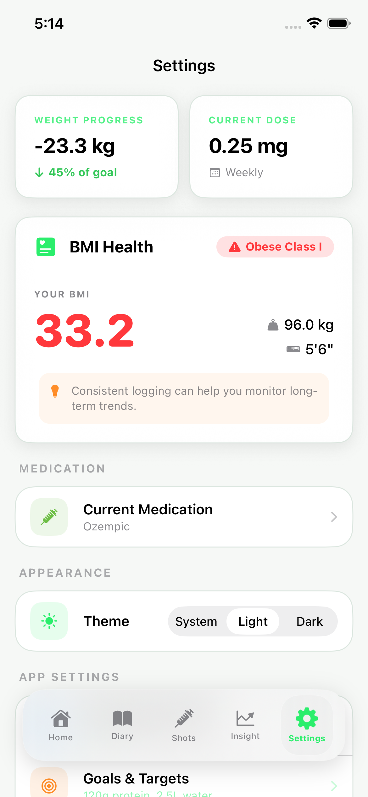

Medication tracking
- Log each shot with timing, dose, and injection site.
- See a 7-day medication level forecast for every cycle.
- Use reminders so the routine stays consistent week after week.
NutriGLP gives people on Ozempic, Wegovy, Mounjaro, and Zepbound one calm place to track medication, nutrition, hydration, and progress without the guesswork.
The app is designed to help people build steadier routines around dose timing, meal planning, hydration, and reflective tracking.



Every screen is designed to help users understand what to do next, not overwhelm them with noise.
NutriGLP helps people turn weekly medication into a repeatable routine they can actually keep.
The app follows the real cadence of GLP-1 use instead of forcing everything into generic habit tracking.
Record the dose, timing, and site so the week starts with accurate data.
Follow appetite, meals, hydration, and routines as medication effects change.
See progress trends and identify what is helping with consistency.
Use reminders and weekly visibility so the next dose never feels chaotic.
Browse the flow users move through most often during the week.




The most common questions people ask before downloading NutriGLP.
NutriGLP supports major GLP-1 and dual GIP or GLP-1 medications, including Ozempic, Wegovy, Mounjaro, and Zepbound.
The forecast uses the medication type, dose, and logging schedule to help visualize how each week is unfolding so users can plan habits with more context.
Yes. NutriGLP is designed around private on-device storage rather than sending sensitive routine data to a central database.
Yes. Users can continue logging their routine and checking progress when they do not have an internet connection.
NutriGLP combines medication tracking, daily nutrition visibility, and progress insights in one experience that feels steady and easy to return to.
Available on iPhone and iPad